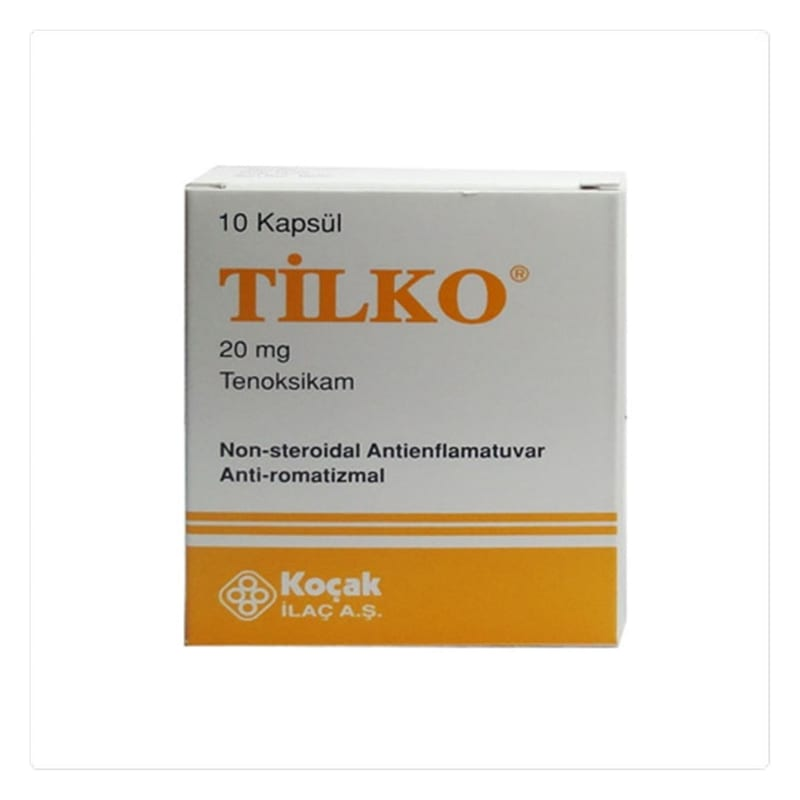

Tilko 20 mg Kapsül, 10 Adet

Ne için kullanılır
KT · Bölüm 1TİLKO tenoksikam adı verilen bir ilaç içerir. Tenoksikam, “Non-Steroidal Antiinflamatuvar ilaçlar” (NSAİİ) grubuna bağlı bir ilaçtır. Tenoksikam, ağrı kesici, ateş dürücü ve iltihap giderici özelliğe sahiptir.
TİLKO kapsüllerin her biri 20 mg etkin madde içermektedir ve TİLKO sarı renkli kapsüller içinde sarı renkli toz şeklindedir. TİLKO 20 mg kapsül 10 veya 30 kapsül içeren blister ambalajlarda sunulmaktadır. TİLKO, kireçlenme (osteoartrit), eklemlerde ağrı ve şekil bozukluğuna neden olan romatoid artrit hastalığı ve sırt eklemlerinde sertleşme ile seyreden ağrılı ilerleyici bir romatizmal hastalık olan ankilozan spondilitin belirti ve bulgularının tedavisi ile damla hastalığı (akut gut artriti), akut kas iskelet sistemi ağrıları, ameliyat sonrası ağrı ve ağrılı adet tedavisinde etkilidir. 1. TİLKO’yu kullanmadan önce dikkat edilmesi gerekenler TİLKO’yu aşağıdaki durumlarda KULLANMAYINIZ Eğer; Tenoksikama, TİLKO’nun bileşiminde bulunan yardımcı maddelerden herhangi birine (yardımcı maddeler listesine bakınız) alerjiniz varsa, Aspirin ya da diğer NSAİ ilaçlara karşı astım, nezle veya kurdeşen gibi alerjik reaksiyonlarınız varsa, Daha önce NSAİ ilaç kullanırken midenizde kanama ya da delinme olduysa, Mide ya da bağırsak ile ilgili ülser ya da kanama geçirdiyseniz, Böbrek, karaciğer ya da kalbinizle ilgili ciddi problemleriniz varsa, Hamileliğinizin son 3 ayı içerisindeyseniz. TİLKO’yu aşağıdaki durumlarda DİKKATLİ KULLANINIZ Eğer; Kalp ile ilgili probleminiz (kontrol edilemeyen yüksek tansiyon, konjestif kalp yetmezliği -kalp yetersizliğine bağlı olarak solunum yetmezliği, ödem, karaciğerde büyüme ile belirgin hastalık- gibi) varsa ya da daha önce inme geçirdiyseniz ya da bunlar için risk faktörleriniz (yüksek tansiyon, kanda aşırı yağ bulunması, şeker hastalığı, sigara) varsa, Yaşlıysanız (yan etkileri daha şiddetli yaşayabilirsiniz), Böbrek ve karaciğer problemleriniz varsa, Kan pıhtılaşması ile ilgili problemleriniz varsa, Kan hacminiz düşük ise (kanama ya da ciddi su kaybı nedeniyle),
Vücudunuzun herhangi bir yerindeki kan damarlarınızda probleminiz varsa, Ülseratif kolit (bağırsak iltihabı) veya Crohn hastalığı (bağırsak iltihabı, karın hastalığı, ishal, kusma ve kilo kaybına yol açan durum) gibi otoimmün bir hastalığınız (vücudun savunma sisteminin vücudu yok etmeye çalıştığı hastalık) varsa. Bu uyarılar, geçmişteki herhangi bir dönemde dahi olsa sizin için geçerliyse lütfen doktorunuza danışınız. TİLKO’nun yiyecek ve içecek ile kullanılması TİLKO gıda ile birlikte veya gıda almadan kullanılabilir. Hamilelik İlacı kullanmadan önce doktorunuza veya eczacınıza danışınız. Hamileyseniz veya hamile kalma olasılığınız varsa bu ilacı kullanmayınız. Gebeliğin üçüncü trimesterinde kesinlikle kullanılmamalıdır. TİLKO hamile kalma güçlüğüne neden olur. Bu nedenle gebe kalma güçlüğünüz varsa veya kısırlık araştırması yapılıyorsa doktorunuza bu ilacı kullandığınızı söyleyiniz. Tedaviniz sırasında hamile olduğunuzu fark ederseniz hemen doktorunuza veya eczacınıza danışınız. Emzirme İlacı kullanmadan önce doktorunuza veya eczacınıza danışınız. Doktorunuz aksini söylemedikçe emzirme döneminde kullanmayınız. Araç ve makine kullanımı Baş dönmesi, sersemleme ve görme bozukluğu gibi araç ve makine kullanımını etkileyebilecek yan etkiler görülüyorsa araç ve makine kullanmaktan kaçınmalısınız. TİLKO’nun içeriğinde bulunan bazı yardımcı maddeler hakkında önemli bilgiler Bu tıbbi ürün laktoz içerir. Eğer daha önceden doktorunuz tarafından bazı şekerlere karşı intoleransınız olduğu söylenmişse bu tıbbi ürünü almadan önce doktorunuzla temasa geçiniz. Diğer ilaçlar ile birlikte kullanımı TİLKO alırken özellikle aşağıdakilerden herhangi birini kullanıyorsanız doktorunuza veya eczacınıza söyleyiniz:
Aspirin, ibuprofen, diklofenak ya da diğer NSAİ ilaçlar, Kalp yetmezliğinde kullanılan kardiyak glikozitleri (digoksin gibi), Hidrokortizon, prednizolon ve deksametazon gibi bir steroid (ödem ve inflamasyon tedavisinde kullanılır), Varfarin, fenprokumon ve heparin gibi kan pıhtılaşmasını engelleyen ilaçlar (antitrombotik ilaçlar), Seçici serotonin geri alım inhibitörleri ve lityum (depresyon tedavisinde kullanılan ilaçlar), Metotreksat (deri problemlerinde, eklem iltihabı ve kanser tedavisinde kullanılan bir ilaç), Mifepriston (gebeliği sonlandırmak için kullanılan bir ilaç), Siklosporin ve takrolimus (bağışıklık sistemini baskılayan ilaçlar), Siprofloksasin ya da moksifloksasin gibi bir “kinolon antibiyotiği” (enfeksiyon tedavisinde kullanılan antibiyotik grubu), Renin anjiotensin sistemi üzerinde etkili ADE inhibitörleri (silazapril, enalapril gibi) ya da ARB’ler (reseptör blokerleri) non-selektif beta bloker ilaç olan propranolol gibi yüksek kan basıncı tedavisi için kullanılan diğer ilaçlar, Zidovudin (AİDS tedavisinde kullanılan bir ilaç), Hidroklorotiyazid, furosemid gibi yüksek tansiyon tedavisinde kullanılan idrar söktürücü ilaçlar, Ağızdan alınan ve şeker hastalığının önlenmesinde kullanılan ilaçlar (glibornürid, glibenklamid ve tolbutamid gibi), Gut (damla hastalığı) tedavisinde kullanılan probenesid, Mide asidinin azaltılmasında kullanılan ilaçlar (antiasitler ve simetidin), Alkol. Eğer reçeteli ya da reçetesiz herhangi bir ilacı şu anda kullanıyorsanız veya son zamanlarda kullandınız ise lütfen doktorunuza veya eczacınıza bunlar hakkında bilgi veriniz. 2. TİLKO nasıl kullanılır? Uygun kullanım ve doz/uygulama sıklığı için talimatlar: Doktorunuz hastalığınıza bağlı olarak ilacınızın dozunu belirleyecek ve size uygulayacaktır. Genel olarak günde 1 kapsül olarak uygulanır.
TİLKO’nun standart dozu akut gut dışındaki tüm hastalıkların tedavisi için günde tek doz 20 mg’dır. İlacınızı her gün aynı saatte alınız. Akut gut krizleri için önerilen doz ise ilk 2 gün, günde 40 mg’dır ve takip eden 5 gün süreyle TİLKO dozu günde 20 mg’a düşürülür. Kronik hastalığınız varsa günde 20 mg’lık dozun üzerine çıkılması tavsiye edilmez. Bu durumda ilacın etkisinde anlamlı bir artış olmaksızın istenmeyen etkilerin sıklık ve şiddeti artacaktır. Uzun süreli tedaviye gereksinim gösteren hastalarda idame tedavi için günlük oral (ağızdan uygulanır) dozun 10 mg’a indirilmesi denenebilir. Uygulama yolu ve metodu: Ağızdan alınır. Kapsüller bir bardak su ile alınır. TİLKO kapsüller tercihen yemek sırasında veya yemekten hemen sonra alınmalıdır. Değişik yaş grupları: Çocuklarda kullanımı: TİLKO’nun çocuklarda kullanılması önerilmemektedir. Yaşlılarda kullanımı: Doktorunuz hastalığınıza bağlı olarak ilacınızın dozunu belirleyecektir. Özel kullanım durumları: Böbrek/Karaciğer yetmezliği: Prensip olarak böbrek veya karaciğer hastalığı olanlarda yukarıda belirtilen dozlar uygulanır. Doktorunuz hastalığınızın şiddetine göre dozunu azaltabilir. Ciddi karaciğer ve böbrek yetmezliği olan hastalarda kullanılmamalıdır. Eğer TİLKO’nun etkisinin çok güçlü veya zayıf olduğuna dair bir izleniminiz var ise doktorunuz veya eczacınız ile konuşunuz. Kullanmanız gerekenden daha fazla TİLKO kullandıysanız: TİLKO’yu gerekenden daha fazla kullanmışsanız ilacın yan etkileri daha şiddetli görülebilir. Doz aşımında, emilimi azaltıcı (örneğin, mide yıkanması veya aktif kömür) ve atılımı hızlandırıcı (örneğin, kolestiramin) yaklaşımlar denenmelidir.
TİLKO’dan kullanmanız gerekenden fazlasını kullanmışsanız bir doktor veya eczacı ile konuşunuz. TİLKO’yu kullanmayı unutursanız: TİLKO’yu kullanmayı unutursanız bu dozu atlayın ve bir sonraki doz zamanında ilacınızı kullanmaya devam ediniz. Unutulan dozları dengelemek için çift doz almayınız. TİLKO ile tedavi sonlandırıldığında oluşabilecek etkiler Doktorunuza danışmadan kullanmayı sonlandırmayınız. 3. Olası yan etkiler nelerdir? Tüm ilaçlar gibi TİLKO’nun içeriğinde bulunan maddelere duyarlı olan kişilerde yan etkiler olabilir. Aşağıdakilerden biri olursa, TİLKO’yu kullanmayı durdurunuz ve DERHAL doktorunuza bildiriniz veya size en yakın hastanenin acil bölümüne başvurunuz: Boğaz, yüz, el ve ayaklarda ani şişme, nefes darlığı, yutma güçlüğü ve deride döküntü, soyulma ve kaşıntı ile görülen alerjik reaksiyonlar Kusmukta kan ya da kahve telvesi lekeleri görünümü veren mide kanaması Koyu renkli, yumuşak gaita ya da kanlı diyare ile görülen bağırsak kanaması Mide ve bağırsakta ülserler; mide ağrısı, ateş, bulantı ya da kusma Arkaya doğru vuran kuvvetli mide ağrısı ile görülen pankreas sorunları Ağrı, diyare (ishal), kusma ve kilo kaybı ile kendini gösteren ülseratif kolit ve Crohn hastalığının kötüleşmesi. Hızla gelişen deride, ağız, boğaz ve gözlerde soyulma ile görülen ciddi deri reaksiyonu Deride ve gözlerin beyaz kısmında sararma, halsizlik, iştahsızlık, bulantı, gaita renginde açılma ve hepatit (kan testleri ile saptanır) ile görülen karaciğer sorunları Göğüsten boyna, omuzlara ve sol kola yayılan ağrı ile görülen kalp krizi Bazen vücudun bir tarafında kas güçsüzlüğü, hissizlik, ani tat, koku, görme, duyma değişikliği ve konfüzyon (zihin karışıklığı) ile görülen inme Ateş, halsizlik, bulantı, ense sertliği, baş ağrısı, ışığa duyarlılık ve konfüzyon ile görülen menenjit
Bunların hepsi çok ciddi yan etkilerdir. Eğer bunlardan biri sizde mevcut ise, acil tıbbi müdahaleye veya hastaneye yatırılmanıza gerek olabilir. Aşağıdakilerden herhangi birini fark ederseniz, doktorunuza söyleyiniz: Mide yanması, hazımsızlık, mide ağrısı, bulantı, konstipasyon (kabızlık), diyare (ishal), gaz çıkarma Anemi ya da beyaz kan hücre sayısı değişikliği gibi kan ile ilgili sorunlar Yüksek kan şekeri (hiperglisemi) Uyku güçlüğü ve rüyalarda değişim Depresyon Olmayan şeyleri görmek ya da duymak (halüsinasyon) Konfüzyon (zihin karışıklığı) ya da sinirlilik Baş ağrısı Baş dönmesi, başta ağırlık ya da uyku hali El ve ayaklarda iğnelenme ya da hissizlik Görme bozukluğu, gözlerde şişlik ve duyarlılık Kulak çınlaması (tinnitus) Denge sorunlarına yol açan baş dönmesi El, ayak ve bacaklarda şişlik (ödem). Göğüs ağrısı, halsizlik ve nefes darlığı ile birlikte olabilir (kalp yetmezliği). Çarpıntı, kalp atımında yavaşlama ya da kan basıncında yükselme Kalbinizin kanı vücudunuza pompalamasında sorunlar; halsizlik, nefes darlığı, baygınlık hissi ve genel ağrı. Nefes darlığı, hırıltılı solunum ve öksürük Kaşıntı, deri döküntüsü, güneşe duyarlılık, saç dökülmesi (alopesi) Tırnak değişiklikleri Böbrek sorunları Ağızda ağrı ve ülserler İştahsızlık Kilo artışı ya da azalması
Hamile kalmada güçlük Burun kanaması Bunlar TİLKO’nun hafif yan etkileridir. Eğer bu kullanma talimatında bahsi geçmeyen herhangi bir yan etki ile karşılaşırsanız doktorunuzu veya eczacınızı bilgilendiriniz. Yan etkilerin raporlanması Kullanma talimatında yer alan veya almayan herhangi bir yan etki meydana gelmesi durumunda hekiminiz, eczacınız veya hemşireniz ile konuşunuz. Ayrıca karşılaştığınız yan etkileri www.titck.gov.tr sitesinde yer alan “İlaç Yan Etki Bildirimi” ikonuna tıklayarak ya da 0 800 314 00 08 numaralı yan etki bildirim hattını arayarak Türkiye Farmakovijilans Merkezi (TÜFAM)’ne bildiriniz. Meydana gelen yan etkileri bildirerek kullanmakta olduğunuz ilacın güvenliliği hakkında daha fazla bilgi edinilmesine katkı sağlamış olacaksınız.
4. TİLKO’nun saklanması TİLKO’yu çocukların göremeyeceği, erişemeyeceği yerlerde ve ambalajında saklayınız.
o C’nin altındaki oda sıcaklığında ve kuru bir yerde saklayınız. Son kullanma tarihiyle uyumlu olarak kullanınız. Ambalajdaki son kullanma tarihinden sonra TİLKO’yu kullanmayınız. Eğer üründe ve/veya ambalajında bozukluklar fark ederseniz TİLKO’yu kullanmayınız. Ruhsat sahibi: KOÇAK FARMA İLAÇ VE KİMYA SANAYİ A.Ş. Bağlarbaşı, Gazi Cad. No: 64-66 Üsküdar/İSTANBUL İmal yeri: KOÇAK FARMA İLAÇ VE KİMYA SANAYİ A.Ş. Organize Sanayi Bölgesi Çerkezköy / Tekirdağ
Bu kullanma talimatı (...) tarihinde onaylanmıştır.